Slide 11 หน้า 1–37 — ARCH/GARCH และ Neural Network Autoregressive
ทุกโมเดลตั้งแต่ Lesson 4 ถึง 11 พยากรณ์ "ค่า" ของอนาคต บทนี้มีสองเรื่อง เรื่องแรกพยากรณ์ "ความกว้างของการแกว่ง" ของอนาคต ซึ่งการเงินเรียกว่า volatility1 เรื่องที่สองเอา neural network มาใช้กับ lag แบบเดียวกับ AR ข้อสอบเก่ามี ARCH/GARCH ราวปีละหนึ่งข้อ2 และควิซท้าย Class 12 ที่ให้ทำ ARCH/GARCH ครบทุกขั้นคือรูปแบบที่ final จะออกถ้าออก3
| คำถาม | โมเดล | อ่านจากอะไร | ตอน |
|---|---|---|---|
| พรุ่งนี้ return จะแกว่งกว้างแค่ไหน | ARCH(p), GARCH(p,q) | ACF ของ return² เป็นแบบ AR, ArchTest reject | 1–4 |
| พรุ่งนี้ค่าจะเป็นเท่าไร โดยให้ lag มีผลแบบไม่เป็นเส้นตรง | NNAR(p,P,k)[s] | เลือก p ด้วย AIC ของ AR เส้นตรง k ≈ ครึ่งของ input | 5 |
สีในสมการ: \(\shk{\varepsilon_t}\) สีฟ้าคือ shock ที่มองไม่เห็น · \(\prm{\alpha},\prm{\beta}\) สีส้มคือพารามิเตอร์ที่ต้องประมาณ
พยากรณ์อากาศบอกว่าพรุ่งนี้ฝนตกเฉลี่ย 10 มม. ข้อมูลนี้ยังไม่พอถ้าต้องตัดสินใจจัดงานกลางแจ้ง เพราะอยากรู้ด้วยว่าอาจตกได้ถึง 60 มม. หรือไม่ ARIMA ให้ตัวเลขแรก ARCH/GARCH ให้ตัวเลขหลัง
สไลด์สรุปไว้สองบรรทัด: ARIMA เป็นโมเดลของค่าเฉลี่ย และ ARCH/GARCH เป็นโมเดลของความแปรปรวน ใช้เมื่อเป้าหมายคือ วิเคราะห์และพยากรณ์ความผันผวน ซึ่งสำคัญกับงานการเงิน เช่น การจัดสรรสินทรัพย์ กลยุทธ์การซื้อขาย และการบริหารความเสี่ยง ตัวอย่างที่อาจารย์ยกคือ Value at Risk4
| Mean model (ARIMA, ETS, VAR) | Variance model (ARCH, GARCH) | |
|---|---|---|
| พยากรณ์อะไร | \(E(X_{t+h}\mid \text{อดีต})\) | \(\mathrm{Var}(X_{t+h}\mid \text{อดีต})=\sigma^2_{t+h}\) |
| สมมติเรื่อง σ² | คงที่ตลอดเวลา ช่วงพยากรณ์ของ Lesson 8 จึงกว้างเท่ากันไม่ว่าตลาดสงบหรือวุ่น | เปลี่ยนตามอดีต ช่วงพยากรณ์กว้างขึ้นหลังวันที่แกว่งแรง |
| ข้อมูลที่เหมาะ | ยอดขาย อุณหภูมิ | rate of return ของหุ้น ดัชนี ค่าเงิน |
สองแบบนี้ใช้ร่วมกันได้ ugarchspec มีทั้ง mean.model (ARMA) และ variance.model (GARCH) ในคำสั่งเดียว ตัวอย่างในบทนี้ตั้ง mean model เป็น ARMA(0,0) คือค่าเฉลี่ยคงที่ จึงพยากรณ์ค่าเฉลี่ยเป็นเส้นตรง แต่ sigma เปลี่ยนทุกวัน (ตอน 4)
ตัวอย่างนี้มีไว้ให้เห็นว่า ACF ของ return เงียบเหมือน white noise แต่ ACF ของ return² ทะลุเส้นหลาย lag ข้อมูลนี้จึงมีโครงสร้างซ่อนอยู่ในความแปรปรวน ไม่ใช่ในค่าเฉลี่ย
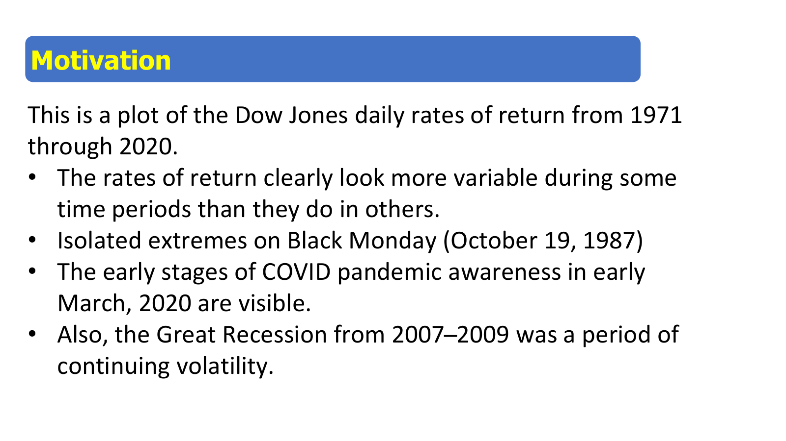
อนุกรม rate of return รายวันของ Dow แกว่งรอบศูนย์ตลอด 50 ปี ค่าเฉลี่ยไม่ขยับ แต่ บางช่วงแกว่งแรงกว่าช่วงอื่นอย่างชัดเจน เช่น Black Monday ปี 1987 และช่วงต้นของ COVID ADF test บอกว่าอนุกรมนี้นิ่ง5 สไลด์อธิบายว่าความแปรปรวน ไม่ได้เปลี่ยนอย่างค่อยเป็นค่อยไป แต่เพิ่มหรือลดอย่างฉับพลันเป็นช่วง ๆ และเรียกพฤติกรรมนี้ว่า ความแปรปรวนไม่คงที่แบบมีเงื่อนไข (conditional heteroskedasticity)
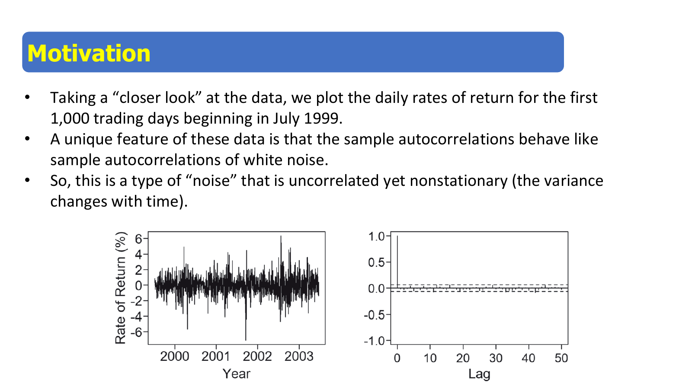
เมื่อดูใกล้ ๆ 1,000 วันแรกตั้งแต่กรกฎาคม 1999 ACF ของตัวอย่างเป็นเหมือน ACF ของ white noise ถ้าหยุดที่ขั้นตอนของ Lesson 7 จะสรุปว่าเป็น ARIMA(0,0,0) ไม่มีอะไรให้โมเดล และ ARMA และ ARIMA ไม่ได้ออกแบบมาสำหรับพฤติกรรมนี้
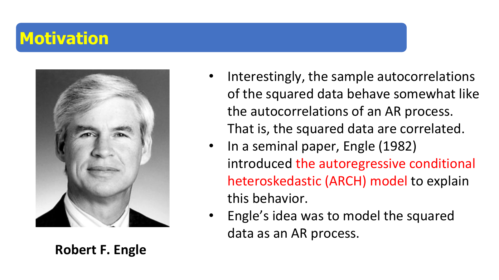
ทางออกคือยกกำลังสอง ค่าที่แกว่งบวกลบจะกลายเป็นบวกทั้งหมด6 กราฟของ rate of return ยกกำลังสอง เน้นยอดแหลมให้เห็นชัด และ ACF ของข้อมูลกำลังสองมีลักษณะคล้าย ACF ของ AR นั่นคือข้อมูลกำลังสองสัมพันธ์กัน ACF ลดลงช้า ๆ แบบที่ Lesson 6 สอนว่าเป็นสัญญาณของ AR
Engle (1982) จึงเสนอ โมเดล autoregressive conditional heteroskedastic (ARCH) โดย แนวคิดของ Engle คือมองข้อมูลกำลังสองเป็นกระบวนการ AR ชื่อของโมเดลบอกครบทั้งสามส่วน:
| คำในชื่อ | ความหมายบนสไลด์ (หน้า 9) |
|---|---|
| AutoRegressive | ขึ้นกับอดีตของตัวเอง |
| Conditional | ความแปรปรวนขึ้นกับข้อมูลในอดีต |
| Heteroskedasticity | ใช้กับความแปรปรวนที่ไม่คงที่ |
สไลด์หน้า 5 เขียนว่า เพราะความแปรปรวนเปลี่ยนตามเวลา ข้อมูลแบบนี้ควรมองเป็นกระบวนการที่ไม่นิ่ง แต่ ADF บอกว่านิ่ง สองข้อนี้ไม่ขัดกัน ADF ตรวจ unit root ในค่าเฉลี่ย (Lesson 7) ส่วนที่เปลี่ยนคือความแปรปรวนแบบมีเงื่อนไข (เมื่อรู้อดีต) ความแปรปรวนแบบไม่มีเงื่อนไขของ ARCH(1) เท่ากับ \(\prm{\alpha_0}/(1-\prm{\alpha_1})\) ซึ่งคงที่ (ตอน 2.1) ห้าม difference ข้อมูลแบบนี้เพื่อแก้ปัญหาความแปรปรวน เพราะ difference แก้ได้แค่ค่าเฉลี่ยที่เดิน
ไม่ใช่ สไลด์หน้า 19 เตือนว่า residual อาจดูเป็น white noise แต่ residual² ไม่เป็น ต้องตรวจ ACF หรือ Ljung-Box ของ residual² ด้วย หรือใช้ ArchTest
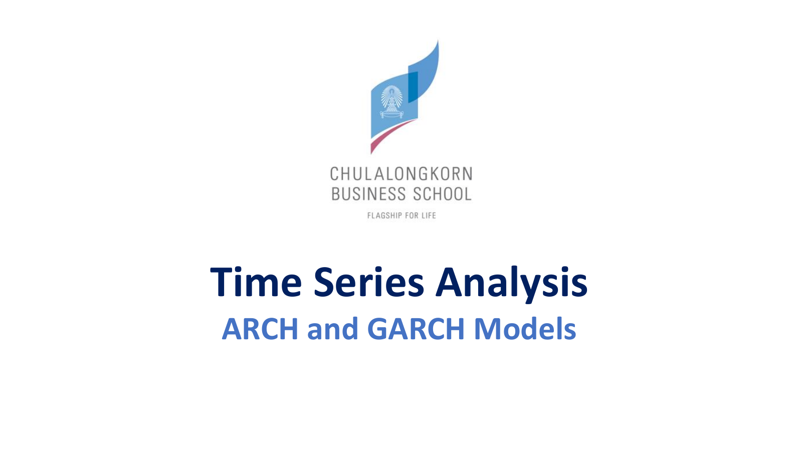
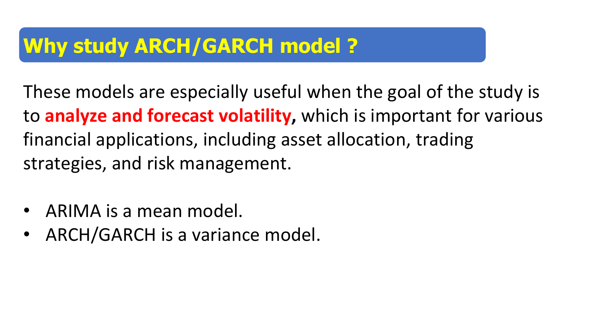
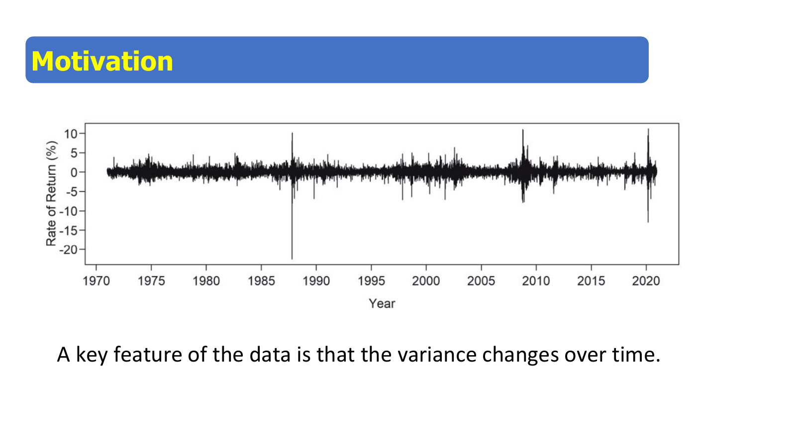
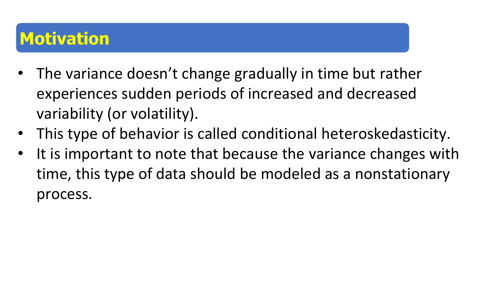
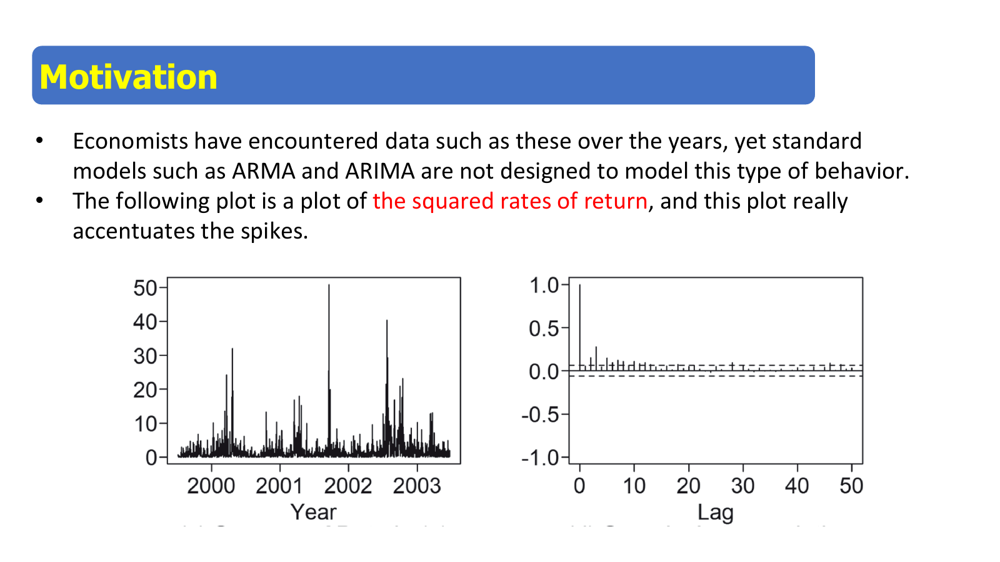
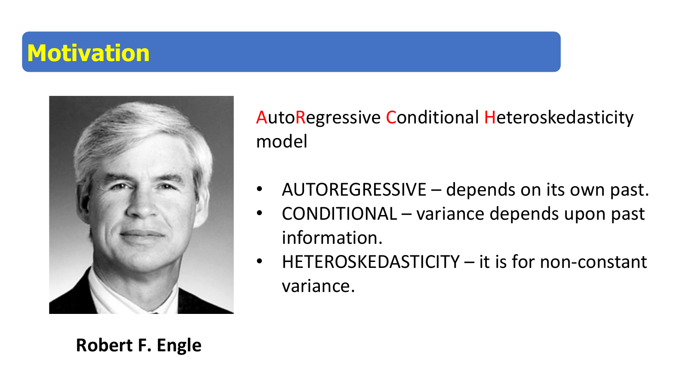
คิดถึงคนเดินบนสะพานแขวน ถ้าเมื่อกี้สะพานโยกแรง ก้าวต่อไปก็มีโอกาสโยกแรงอีก แต่ไม่รู้ว่าจะโยกไปทางซ้ายหรือขวา ขนาดของการโยกส่งต่อกันได้ แต่ทิศทางเดาไม่ได้
ค่าวันนี้ = เสียงสุ่มมาตรฐาน × ความกว้างของวันนี้ และความกว้างของวันนี้คำนวณจากกำลังสองของค่าเมื่อวาน อาจารย์เขียนด้วยมือเป็น \(X_t=w_t\sigma_t\) ซึ่งคือสมการเดียวกัน7
| สัญลักษณ์ | ความหมาย |
|---|---|
| \(u_t\) | ข้อมูลที่ค่าเฉลี่ยเป็นศูนย์ เช่น rate of return หรือ residual จาก mean model |
| \(\shk{\varepsilon_t}\) | white noise แจกแจงปกติ ค่าเฉลี่ยศูนย์ ความแปรปรวนหนึ่ง ที่ไม่สัมพันธ์กับ \(u_{t-1}^2\) |
| \(\prm{\alpha_0}>0,\ \prm{\alpha_1}\ge 0\) | ค่าคงที่ที่ต้องประมาณ \(\prm{\alpha_1}\) ยิ่งใหญ่ shock เมื่อวานยิ่งมีผล |
| \(\sigma_t\) | volatility ของวันที่ t ซึ่งรู้ค่าได้ตั้งแต่สิ้นวัน t − 1 |
ให้ \(\prm{\alpha_0}=0.2,\ \prm{\alpha_1}=0.7\) ถ้าเมื่อวาน \(u_{t-1}=2\) ได้ \(\sigma_t^2=0.2+0.7(4)=3.0\) หรือ \(\sigma_t=1.73\) ถ้าเมื่อวาน \(u_{t-1}=0\) ได้ \(\sigma_t=\sqrt{0.2}=0.45\) วันหลังวันที่แกว่งแรงจึงมีช่วง ±2σ กว้างเกือบสี่เท่า ความแปรปรวนระยะยาวคือ \(0.2/(1-0.7)=0.67\) ซึ่งต้องมี \(\prm{\alpha_1}<1\)
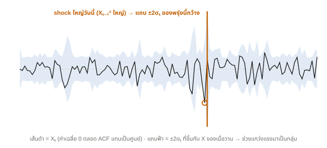
เส้นดำคือ ARCH(1) ที่จำลองด้วย \(\prm{\alpha_0}=0.2,\ \prm{\alpha_1}=0.7\) แถบฟ้าคือ ±2σₜ ที่คำนวณจากค่าเมื่อวาน หลังจุดที่วงไว้ แถบกว้างขึ้นทันที แล้วแคบลงเมื่อค่าที่ตามมาเล็ก ช่วงแกว่งแรงจึงมาเป็นกลุ่ม (volatility clustering) ขณะที่เส้นดำยังขึ้นลงสุ่มรอบศูนย์
สไลด์หน้า 11 เน้นว่า ถ้า u_{t−1} ใหญ่กว่าปกติ ความไม่แน่นอนของ u_t ที่จะมาถึงก็เพิ่มขึ้น แต่ไม่ได้บอกว่า u_t จะใหญ่ อาจใหญ่ เล็ก หรือกลาง ๆ ก็ได้ ข้อสอบที่ถามว่า "shock ใหญ่เมื่อวานทำให้ return วันนี้สูงขึ้น" จึงผิด ที่สูงขึ้นคือ σₜ
ย้ายสมการ ARCH(1) แล้ว \(u_t^2\) มีรูปเหมือน AR(1) ของ Lesson 5 ที่มี φ = \(\prm{\alpha_1}\) โดย \(\shk{w_t}\) เป็น noise ค่าเฉลี่ยศูนย์ที่ไม่สัมพันธ์กัน (ละการพิสูจน์) ACF ของ u² ที่ lag h จึงลดลงประมาณ \(\prm{\alpha_1}^h\) ส่วน u เองไม่สัมพันธ์กันเลย
ตัวอย่างนี้มีไว้ให้เห็นว่า ยิ่ง α₁ ใหญ่ ACF ของ u² ยิ่งสูงและลดช้า ขณะที่ ACF ของ u เป็นศูนย์ทุกกรณี
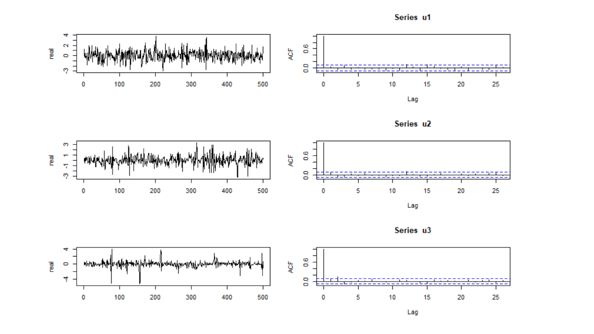
โค้ดหน้า 12 ใช้ gen.arch.wge สร้าง ARCH(1) 500 ค่าสามชุด คือ α₁ = 0.4, 0.7 และ 0.9 ACF ของ u ทั้งสามชุดอยู่ในเส้นประเกือบทั้งหมด อนุกรมที่ α₁ = 0.9 มีช่วงระเบิดสูงชัดที่สุดแต่ ACF ก็ยังเงียบ
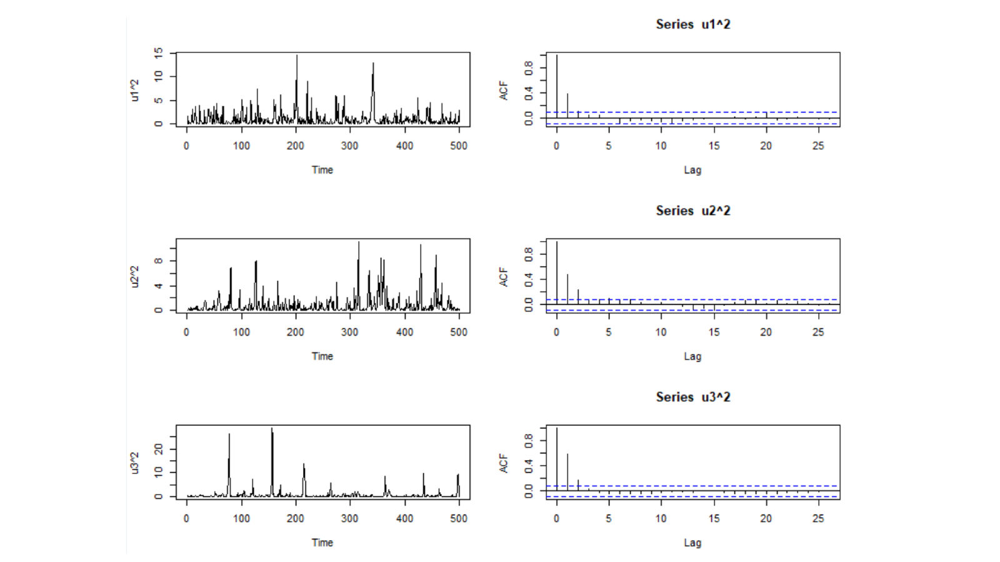
พอยกกำลังสอง ACF ที่ lag 1 ของ u² เป็น 0.32, 0.39 และ 0.57 ตามลำดับ (รันซ้ำด้วย seed 11) เพิ่มขึ้นตาม α₁ ตามสมการ AR(1) ข้างบน ค่าจริงต่ำกว่า α₁ เพราะ ACF ของกำลังสองถูกดึงลงด้วยค่าสุดโต่งไม่กี่ค่า แต่ทิศทางตรงกับทฤษฎี
ARCH(p) ใช้กำลังสองของ p วันก่อน เพื่อ จับช่วงความผันผวนที่ยาวขึ้น และ u² เป็นแบบ AR(p) \(\sigma^2_{t\mid t-1}\) อ่านว่า "ความแปรปรวนของวันที่ t เมื่อรู้ข้อมูลถึงวันที่ t − 1" ซึ่งคือ ความแปรปรวนแบบมีเงื่อนไข ที่ใช้ในตอนต่อไป
σ²_t = 0.1 + 0.5(1)² + 0.4(−2)² = 0.1 + 0.5 + 1.6 = 2.2 เครื่องหมายลบหายไปเพราะยกกำลังสอง ทิศของ shock จึงไม่มีผลกับ volatility
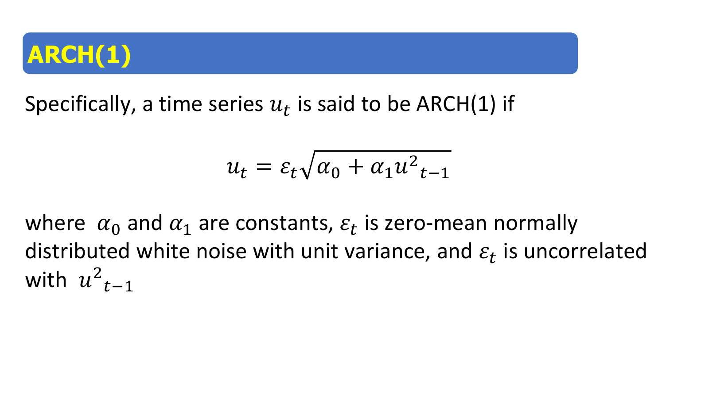
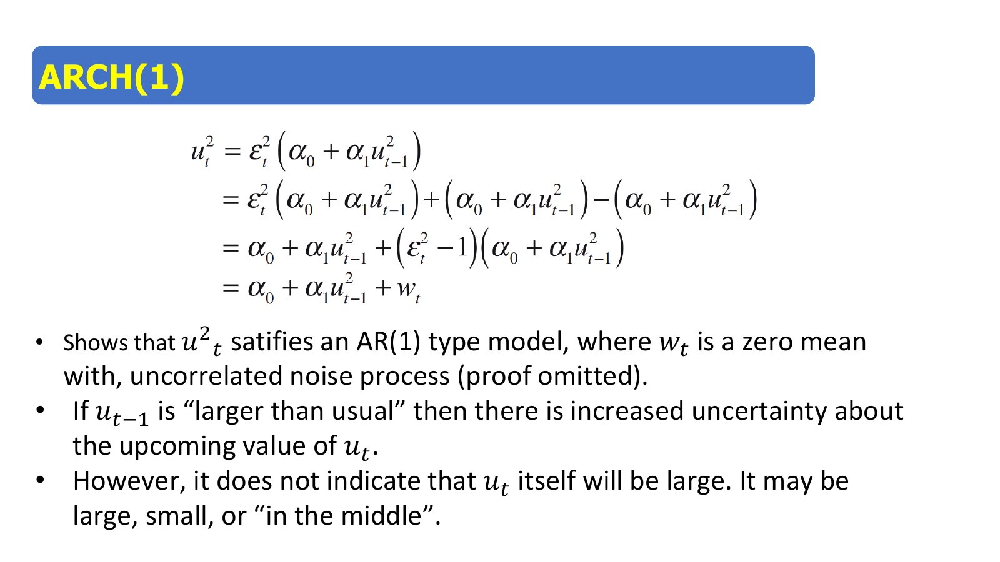
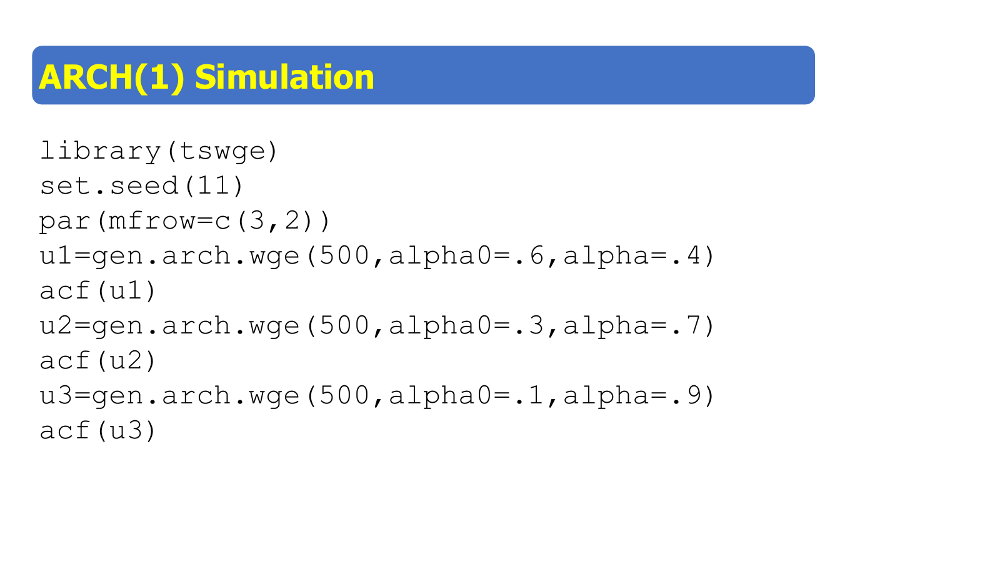
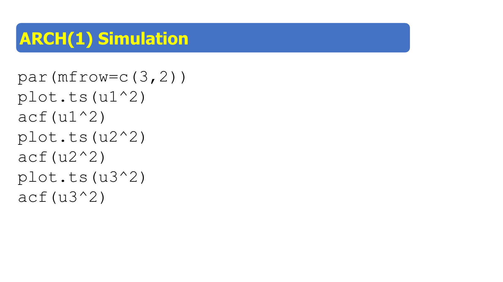
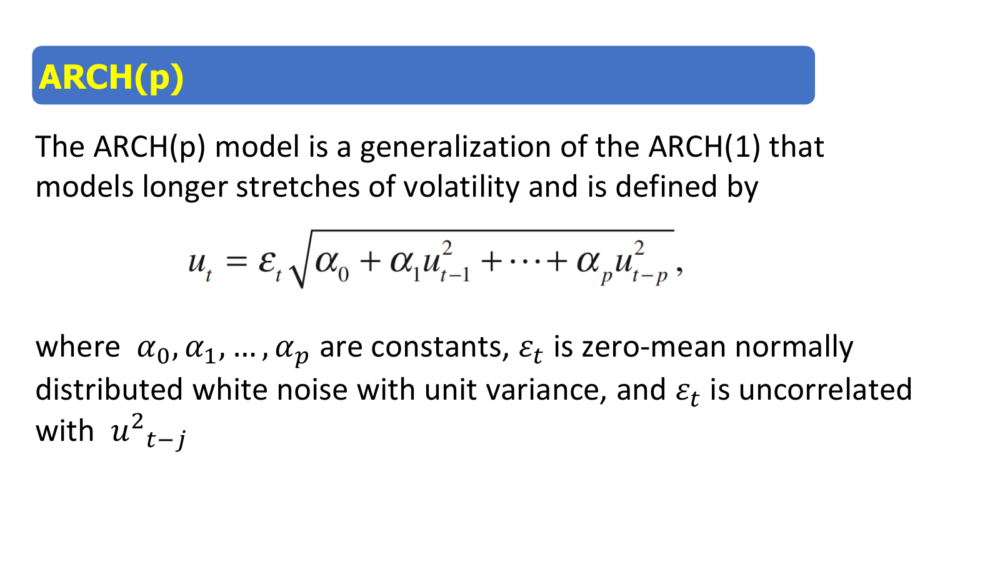
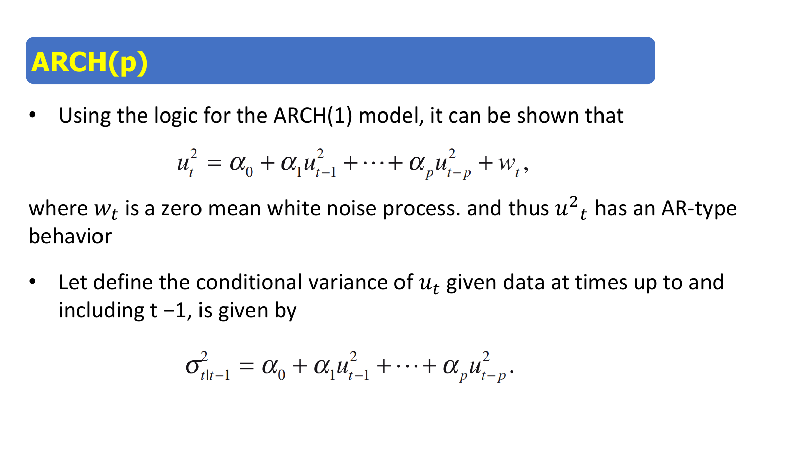
ARCH จำแค่ "เมื่อวานโยกแรงแค่ไหน" GARCH จำเพิ่มว่า "ช่วงนี้ทั้งช่วงโยกแรงแค่ไหน" ผ่าน σ² ของเมื่อวาน ความผันผวนจึงค้างอยู่นานขึ้นด้วยพารามิเตอร์น้อยตัว
GARCH(1,1) ที่อาจารย์เขียนบนกระดานคือ \(\sigma_t^2=\prm{\alpha_0}+\prm{\alpha_1}X_{t-1}^2+\prm{\beta_1}\sigma_{t-1}^2\)8 GARCH ขยาย ARCH แบบเดียวกับที่ ARMA ขยาย AR (Bollerslev, 1986) ส่วน α คือ "AR" ของ u² และส่วน β คือค่าเฉลี่ยถ่วงน้ำหนักของ σ² ในอดีต
| สัญลักษณ์ในสไลด์นี้ | ความหมาย |
|---|---|
| p | จำนวน \(\prm{\alpha}\) คือ lag ของ u² (ส่วน ARCH) |
| q | จำนวน \(\prm{\beta}\) คือ lag ของ σ² (ส่วน GARCH) |
| GARCH(p,0) | ไม่มี β จึงเท่ากับ ARCH(p)9 |
| ARCH(p) | GARCH(p,q) | |
|---|---|---|
| σ²ₜ ขึ้นกับ | u² ของ p วันก่อนเท่านั้น | u² ของ p วันก่อน และ σ² ของ q วันก่อน |
| หน้าตาของกราฟ | bursty ระเบิดแล้วหายเร็ว | less bursty ช่วงผันผวนอยู่นานกว่า10 |
| จำนวนพารามิเตอร์ | ต้องใช้ p มากเพื่อจับช่วงยาว | มักได้โมเดลที่พารามิเตอร์น้อยกว่า ARCH ที่ฟิตพอกัน |
| เทียบกับ mean model | เหมือน AR | เหมือน ARMA |
หลายตำรา (และ Wikipedia) ให้ p เป็นจำนวน β และ q เป็นจำนวน α ซึ่งกลับกับสไลด์นี้ ในข้อสอบให้ยึดสไลด์: GARCH(2,1) มี α₁, α₂ และ β₁ ตรงกับ output ของ R ในตอน 4
สไลด์หน้า 19 เตือนเรื่องที่เชื่อมกับ Lesson 8 โดยตรง: residual จาก ARMA หรือ ARIMA อาจดูเป็น white และผ่านการตรวจมาตรฐาน แต่ residual² ไม่เป็น white จึง ควรตรวจ residual² เสมอ โดยเฉพาะเมื่อสงสัยว่ามี conditional heteroskedasticity
หลังฟิต GARCH แล้ว ตรวจความเหมาะสมโดยดูว่า residual เป็น white noise และแจกแจงปกติหรือไม่ ด้วยสองเทสต์ ซึ่งเพิ่มเข้าตาราง H0 ที่สะสมมาตั้งแต่ Lesson 7:
| เทสต์ | H0 | อยากได้ผลแบบไหน | บท |
|---|---|---|---|
ADF adf.test | ไม่นิ่ง (มี unit root) | reject (p < 0.05) | Lesson 7 |
Ljung-Box Box.test | white noise | fail to reject (p สูง) | Lesson 8 |
| Jarque-Bera | แจกแจงปกติ (ดู ความเบ้และความโด่ง) | fail to reject (p สูง) | บทนี้ |
| ArchTest (FinTS) | ไม่มี ARCH effect | reject ก่อนเริ่มสร้างโมเดล11 | บทนี้ |
| Granger | X ไม่ Granger-cause Y | reject ถ้าอยากใช้ X | Lesson 11 |
อาจารย์ให้ลอง p, q ตั้งแต่ 1 ถึง 3 แล้วตรวจตามลำดับ: Ljung-Box ของ residual² ต้องผ่านก่อน รองลงมาคือพารามิเตอร์ significant และสุดท้ายคือ Jarque-Bera ไม่จำเป็นต้องใช้ AIC12 ลำดับนี้ต่างจาก Lesson 7 ที่ใช้ AIC เป็นหลัก เพราะเป้าหมายคือให้ residual² ไม่เหลือโครงสร้างความแปรปรวน
ตัวอย่างนี้มีไว้ให้เห็นว่า แม้รู้โมเดลจริงและมีข้อมูล 1,000 ค่า ค่าประมาณก็ยังคลาดได้มาก จึงต้องตัดสินด้วยการตรวจ residual ไม่ใช่ด้วยความใกล้ของพารามิเตอร์
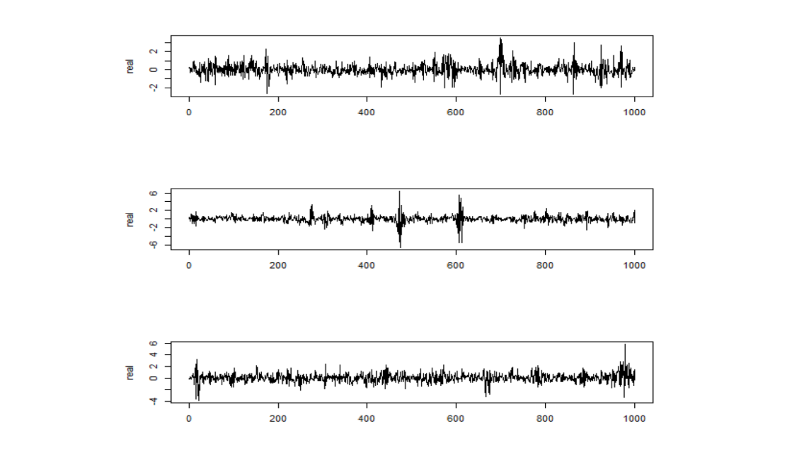
สไลด์หน้า 21 จำลอง ARCH(2), ARCH(3) และ GARCH(1,1) ทั้งสามแบบ จับความผันผวนที่ต่อเนื่องเป็นช่วงได้ พอฟิตกลับด้วย garch() GARCH(1,1) ที่ β₁ จริงเท่ากับ 0.5 ได้ค่าประมาณ 0.34 (รันซ้ำ) กราฟ GARCH ช่วงผันผวนยาวกว่า ARCH ตามตารางในตอน 3.1
คำสั่ง garch(x, order = c(q, p)) ของ tseries ใส่ลำดับกลับกับชื่อโมเดล13 ARCH(2) คือ GARCH(2,0) ต้องพิมพ์ order = c(0, 2) และ GARCH(2,1) ต้องพิมพ์ c(1, 2) แต่ ugarchspec(garchOrder = c(p, q)) ของ rugarch เรียงตามชื่อโมเดลตามปกติ14 ข้อสอบที่ให้โค้ดมาให้อ่านจะใช้จุดนี้เป็นตัวหลอก
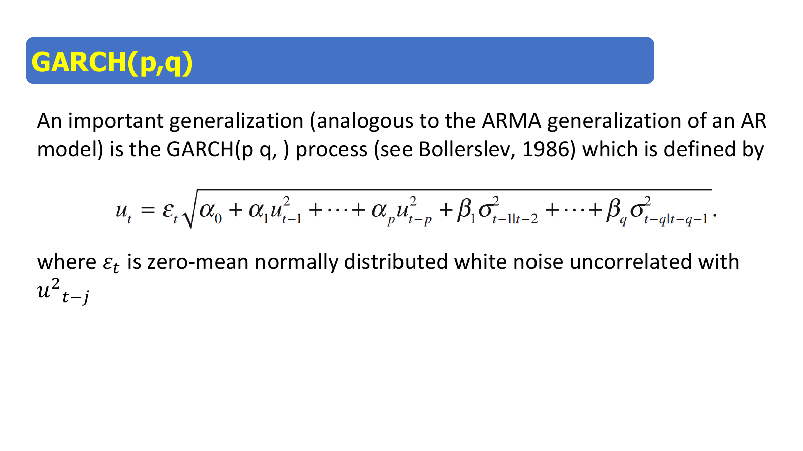
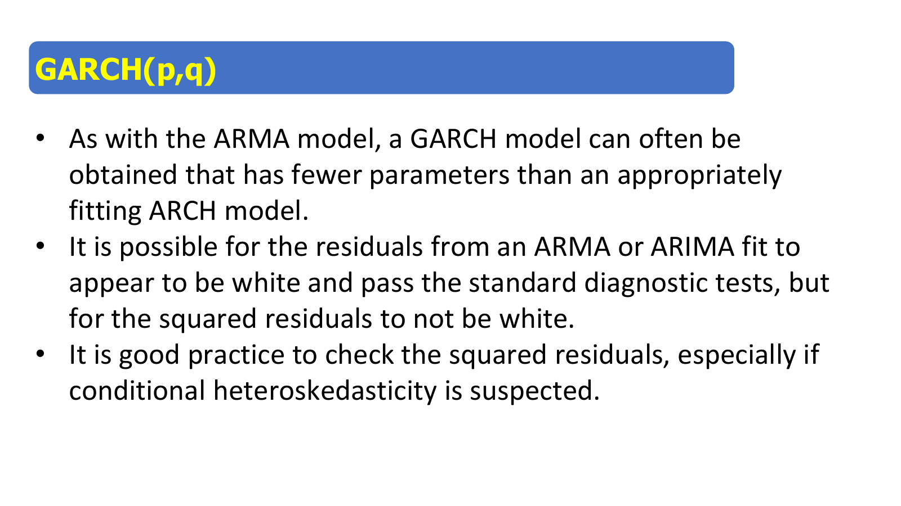
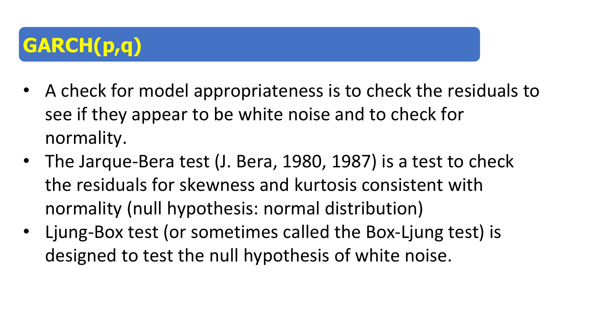
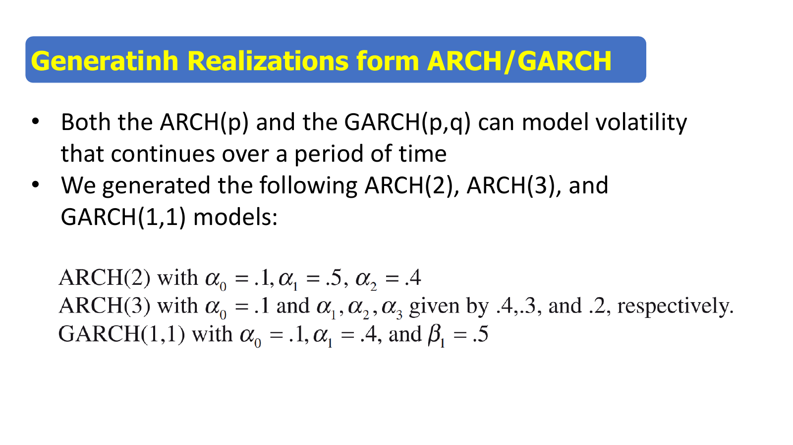
ไฟล์ R_codes.txt จัดเป็นขั้นตอน 0–5 ใช้ข้อมูล rate[7200:8199] ของ tswge ซึ่งคือ 1,000 วันทำการแรกนับจากกรกฎาคม 1999
| ขั้น | ทำอะไร | ผลที่ได้ | สรุป |
|---|---|---|---|
| 1 | adf.test (H0 ไม่นิ่ง) | p = 0.01 | reject: นิ่ง ไม่ต้อง difference15 |
| 2 | plot.ts | มีช่วงแกว่งแรงเป็นกลุ่ม | สงสัย volatility clustering |
| 3 | ArchTest (H0 ไม่มี ARCH effect) | χ² = 110.38, df = 12, p < 2.2e-16 | reject: มี ARCH effect ใช้ GARCH ได้ |
| 4 | ลอง p, q แล้ว ugarchspec + ugarchfit | เลือก GARCH(2,1) | ตอน 4.2 |
| 5 | ugarchforecast | sigma 10 วัน | ตอน 4.3 |
ArchTest ควรทำก่อนลอง p, q อาจารย์โชว์ GARCH(2,1) ก่อนเพราะรู้แล้วว่าใช้ได้ แต่ลำดับที่ถูกคือเทสต์ก่อน16 ถ้า ArchTest ไม่ reject ก็ไม่มีความแปรปรวนให้โมเดล
ตัวอย่างนี้มีไว้ให้เห็นว่า โมเดลที่ "ดีที่สุด" ยังมี α₁ ไม่ significant และไม่ผ่าน Jarque-Bera แต่ผ่านเทสต์สำคัญที่สุดคือ Ljung-Box ของ residual²
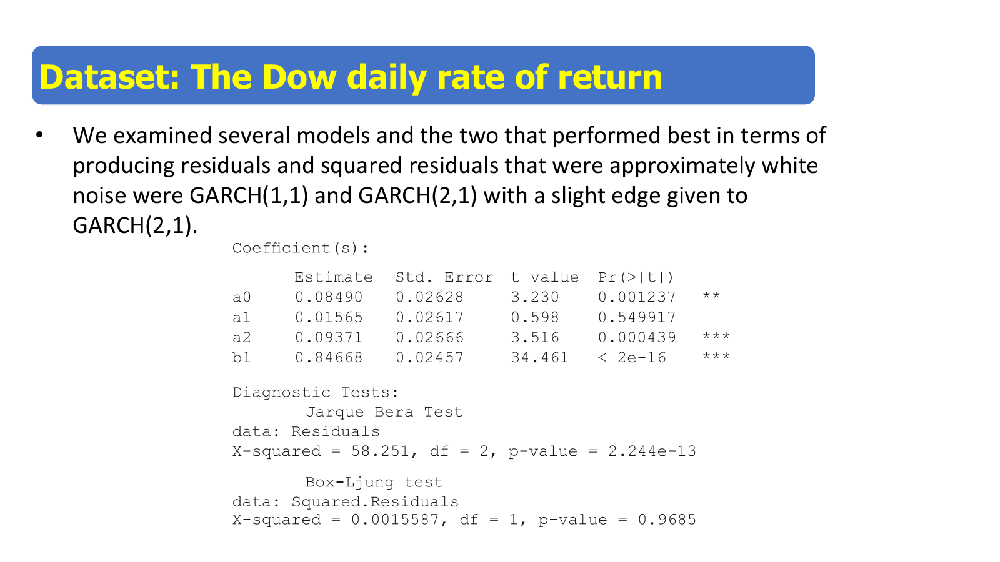
สไลด์บอกว่า สองโมเดลที่ให้ residual และ residual² ใกล้ white noise ที่สุดคือ GARCH(1,1) และ GARCH(2,1) โดย GARCH(2,1) ดีกว่าเล็กน้อย อ่าน output ทีละบรรทัด:
| บรรทัด | ค่า | อ่านว่า |
|---|---|---|
| a1 | 0.0157, p = 0.55 | u² ของเมื่อวานไม่มีผลอย่างมีนัยสำคัญ |
| a2 | 0.0937, p = 0.0004 | u² ของสองวันก่อนมีผล |
| b1 | 0.847, p < 2e-16 | σ² ของเมื่อวานคือตัวหลัก |
| Jarque-Bera | p = 2.2e-13 | reject: residual ไม่ปกติ |
| Box-Ljung ของ Squared.Residuals | p = 0.97 | fail to reject: residual² เป็น white noise โมเดลจับความแปรปรวนได้ครบ |
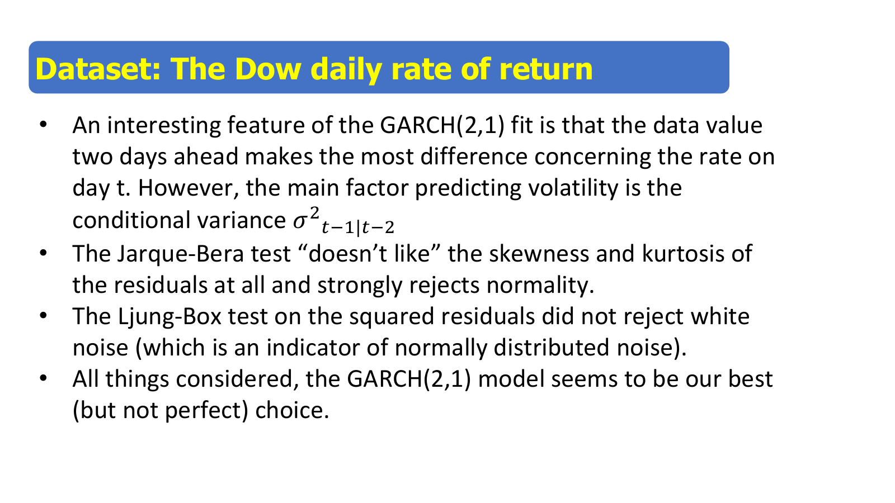
หน้า 25 สรุปตรงกับตาราง: ปัจจัยหลักที่พยากรณ์ความผันผวนคือ conditional variance ของเมื่อวาน (b1 = 0.847) Jarque-Bera "ไม่ชอบ" ความเบ้และความโด่งของ residual เลย และ reject ความปกติอย่างแรง ขณะที่ Ljung-Box ของ residual² ไม่ reject white noise จึงสรุปว่า เมื่อพิจารณาทุกอย่าง GARCH(2,1) เป็นตัวเลือกที่ดีที่สุด (แต่ไม่สมบูรณ์) ประโยคแรกของหน้านี้เขียนว่า ค่าข้อมูล "สองวันข้างหน้า" ส่งผลต่อวันที่ t มากที่สุด ซึ่งหมายถึงสองวันก่อน (a2 > a1)
ugarchfit ใช้ชื่อ omega แทน α₀ และ mu คือค่าเฉลี่ยของ mean model17 ได้ mu = 0.0028, omega = 0.0866, alpha1 = 0.0157, alpha2 = 0.0942, beta1 = 0.845 ใกล้กับ garch() อาจารย์ใช้ garch() ไว้ดูพารามิเตอร์และ ugarch ไว้พยากรณ์18
ถ้าเมื่อวาน u = 1 สองวันก่อน u = 2 และ σ² เมื่อวาน = 1.2 ได้ σ²ₜ = 0.0866 + 0.0157(1) + 0.0942(4) + 0.845(1.2) = 1.49 หรือ σₜ = 1.22 ความแปรปรวนระยะยาวคือ ω/(1 − α₁ − α₂ − β₁) = 0.0866/0.0449 = 1.93 หรือ sd = 1.39 ผลรวม α + β = 0.955 ใกล้ 1 ความผันผวนจึงค้างอยู่นาน
ผล ugarchforecast 10 วันข้างหน้าให้ sigma จาก 1.154 ขึ้นไปถึง 1.20319 ค่าเพิ่มขึ้นช้า ๆ เพราะ volatility ปัจจุบันต่ำกว่าระดับระยะยาว 1.39 และค่อย ๆ กลับเข้าหาระดับนั้น ค่าพยากรณ์ของ series เองเป็นค่าคงที่ mu ทุกวัน เพราะตั้ง armaOrder = c(0,0)20
rugarch มี GARCH หลายแบบ แต่คอร์สนี้สอนแค่ sGARCH (standard GARCH)21 ถ้าโจทย์ให้ข้อมูลที่ยังไม่นิ่ง ให้ difference หรือใช้ return ก่อน แล้วค่อยเริ่มขั้นที่ 1
fail to reject H0 คือไม่พบ ARCH effect ไม่ต้องใช้ ARCH/GARCH ใช้ mean model เช่น ARIMA ตามปกติ
library(tseries); library(rugarch); library(FinTS); library(tswge)
data(rate); rate.2000 <- rate[7200:8199] # 1,000 วันตั้งแต่ ก.ค. 1999
model <- garch(rate.2000, order = c(1,2)) # c(q,p): GARCH(2,1) = α1, α2, β1
summary(model) # ค่าสัมประสิทธิ์ + Jarque-Bera + Box-Ljung ของ residual²
adf.test(rate.2000) # ขั้น 1: H0 ไม่นิ่ง → p = 0.01 นิ่ง
plot.ts(rate.2000) # ขั้น 2: ดู volatility clustering
ArchTest(rate.2000) # ขั้น 3: H0 ไม่มี ARCH effect → p < 2.2e-16
rate_garch <- ugarchspec(variance.model = list(model = "sGARCH", garchOrder = c(2,1)),
mean.model = list(armaOrder = c(0,0))) # ขั้น 4: c(p,q) เรียงปกติ
rate_fit <- ugarchfit(data = rate.2000, spec = rate_garch)
rate_fit # mu, omega, alpha1, alpha2, beta1
ugarchforecast(rate_fit, n.ahead = 10) # ขั้น 5: sigma 1.154 ... 1.203ไฟล์ของอาจารย์พิมพ์ n.head=10 ซึ่ง R ไม่รู้จักและใช้ค่า default n.ahead = 10 แทน ผลจึงออกมาเป็น 10 วันเท่ากัน
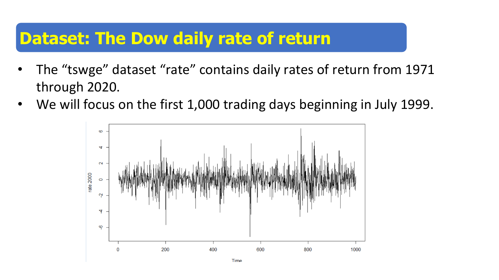
AR(p) คือการถ่วงน้ำหนัก lag แล้วบวกกันเป็นเส้นตรง neural network ทำแบบเดียวกันหลายชุดพร้อมกัน แล้วงอผลแต่ละชุดก่อนรวม จึงจับความสัมพันธ์ที่ไม่เป็นเส้นตรงได้
Neural network มี node ที่น้ำหนักถูกปรับระหว่างการเรียนรู้ และ มีความสุ่มอยู่ในตัว รันแต่ละครั้งได้ผลต่างกัน แบบที่ใช้ในบทนี้คือ feed-forward network หลายชั้น ที่แต่ละชั้นรับ input จากชั้นก่อนหน้า และ input ของแต่ละ node รวมกันด้วยผลรวมเชิงเส้นแบบถ่วงน้ำหนัก NNAR คือ Box-Jenkins บวก neural network ที่มี hidden layer ชั้นเดียว22
เมื่อใช้กับอนุกรมเวลา ใช้ค่า lag ของอนุกรมเป็น input ของ neural network เรียกว่า neural network autoregression หรือโมเดล NNAR โดย พิจารณาเฉพาะ feed-forward ที่มี hidden layer ชั้นเดียว23
p คือจำนวน lag ปกติ P คือจำนวน seasonal lag k คือจำนวน node ใน hidden layer และ s คือความยาวฤดูกาล ไม่มีฤดูกาลเขียนเป็น NNAR(p,k) เช่น NNAR(8,4) ใช้ 8 ค่าล่าสุดเป็น input และมี 4 neuron ใน hidden layer
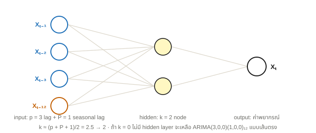
ตัวอย่างบนสไลด์ NNAR(3,1,2)₁₂ มี input X_{t−1}, X_{t−2}, X_{t−3} กับ X_{t−12} และสอง neuron ใน hidden layer input สีฟ้าคือ lag ปกติ สีส้มคือ seasonal lag เส้นทุกเส้นมีน้ำหนักของตัวเอง ถ้าตัด hidden layer ออก (k = 0) input จะต่อตรงไปที่ output และกลายเป็น AR เส้นตรง
| ถ้า k = 0 | เท่ากับ |
|---|---|
| NNAR(p,0) | ARIMA(p,0,0)24 |
| NNAR(p,P,0)ₛ | ARIMA(p,0,0)(P,0,0)ₛ |
สไลด์หน้า 30 เขียนว่า NNAR(p,P,0)ₛ เทียบเท่า ARIMA(p,0,0)(0,P,0)ₛ ตำแหน่งกลางของวงเล็บฤดูกาลคือ D (seasonal difference, Lesson 9) ไม่ใช่ seasonal AR ค่าที่ถูกคือ (P,0,0)ₛ เพราะ input X_{t−s} คือ seasonal AR ไม่ได้ difference อะไรเลย และไม่มี d เพราะ NNAR ไม่ difference ให้เอง
| ค่า | ถ้าไม่กำหนด (สไลด์หน้า 32, 35) |
|---|---|
| p | ไม่มีฤดูกาล: จำนวน lag ที่ AIC ดีที่สุดของ AR(p) เส้นตรง มีฤดูกาล: เลือกจากโมเดลเส้นตรงที่ดีที่สุดของข้อมูลที่ปรับฤดูกาลออกแล้ว |
| P | ข้อมูลมีฤดูกาลใช้ P = 1 |
| k | k = (p + P + 1)/2 ปัดเป็นจำนวนเต็มที่ใกล้ที่สุด |
| repeats | รันหลายครั้ง (20 ครั้งขึ้นไป) แล้วรวมผลด้วย mean หรือ median default 2025 |
| trend | เอา trend ออกก่อนสร้างโมเดล (detrend หรือ differencing) |
การพยากรณ์ ใช้ network ซ้ำทีละก้าว ก้าวแรกใช้ข้อมูลจริง ก้าวที่สองใช้ค่าพยากรณ์ก้าวแรกเป็น input ร่วมกับข้อมูลในอดีต เหมือนการพยากรณ์ AR หลายก้าวใน Lesson 8
ตัวอย่างนี้มีไว้ให้เห็นว่า อ่านชื่อโมเดลจาก output แล้วตรวจสูตร k ได้ทันที และ xreg ต้องมีค่าในอนาคตตอนพยากรณ์
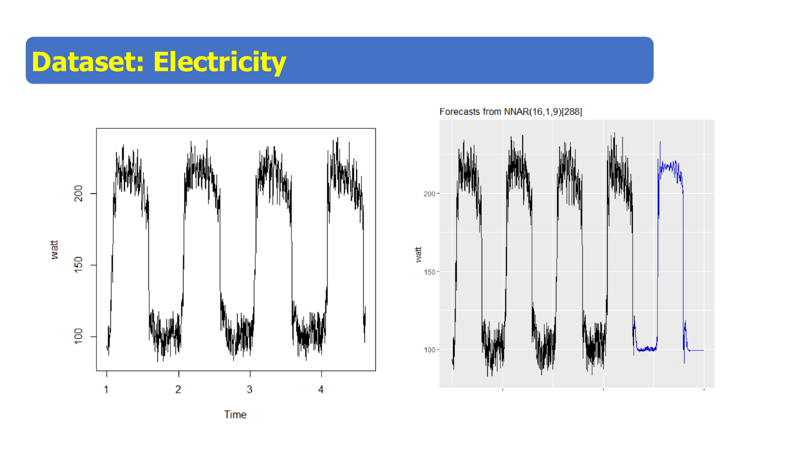
ข้อมูลคือวัตต์ ทุก 5 นาที ของห้องชุดหนึ่งห้องนอน วันละ 24 × 12 = 288 ค่า จึงตั้ง ฤดูกาลรายวัน frequency = 28826 nnetar(watt) ให้ NNAR(16,1,9)[288] ตรวจ k: (16 + 1 + 1)/2 = 9 ตรงกัน network เป็น 17-9-1 คือ 17 input (16 lag + 1 seasonal lag) มีน้ำหนัก (17 + 1) × 9 + (9 + 1) = 172 ตัว ค่าพยากรณ์ 400 จุดทำซ้ำรูปแบบรายวันได้ดี
จำนวนเครื่องใช้ไฟฟ้า ใช้เป็น external regressor ได้ (เพื่อพยากรณ์ให้ดีขึ้น) nnetar(watt, xreg = data$appliances) ได้ NNAR(16,1,10)[288] input เพิ่มหนึ่งตัวเป็น 18 k จึงเป็น (16 + 1 + 1 + 1)/2 = 9.5 ปัดเป็น 10 ตอนพยากรณ์ต้องส่ง xreg ของอนาคตด้วย โค้ดใช้ y = rep(2, times = 120) คือสมมุติว่ามีเครื่องใช้ 2 เครื่องตลอด 120 จุด เป็นเงื่อนไขเดียวกับ ARIMAX ใน Lesson 11 ที่ต้องรู้ X ของอนาคต
ข้อมูล uschange ใช้ NNAR พยากรณ์ unemployment ด้วย regressor 4 ตัว แล้ว accuracy ให้ MAPE = Inf เพราะ unemployment (ค่าการเปลี่ยนแปลง) เป็นศูนย์ได้ และ MAPE หารด้วยค่าจริง (Lesson 2)27 ใช้ RMSE หรือ MAE แทน อาจารย์เตือนอีกข้อว่าข้อมูลน้อย neural network ไม่จำเป็นต้องดีกว่า ARIMA28
input คือ X_{t−1}, X_{t−2} และ X_{t−12} (สามตัว) k = (2 + 1 + 1)/2 = 2 ถ้าใส่ k = 0 จะเท่ากับ ARIMA(2,0,0)(1,0,0)₁₂
data <- read.table("electric.txt", h = T)
watt <- ts(data$watt, frequency = 288) # 5 นาที × 288 = 1 วัน
set.seed(11); library(forecast) # NN มีความสุ่ม ตั้ง seed ให้ผลซ้ำได้
fit <- nnetar(watt); fit # NNAR(16,1,9)[288], 20 networks 17-9-1
autoplot(forecast(fit, h = 400, PI = F)) # PI = T ช้ามากกับข้อมูลใหญ่
fit2 <- nnetar(watt, xreg = data$appliances) # NNAR(16,1,10)[288]
forecast(fit2, xreg = rep(2, times = 120), PI = F) # ต้องมี xreg อนาคต 120 ค่า
# uschange: training 1:180, test 181:187
model <- nnetar(y = train_y, xreg = train_reg)
accuracy(forecast(model, xreg = test_reg)$mean, test_y) # MAPE = Infสรุปการเลือกโมเดลจากโจทย์ (เช่น FINAL 2025 ข้อ 3): ACF ของ return² ลดช้าและเป็นข้อมูลราคาหุ้น ใช้ GARCH ข้อมูลรายวันที่มีวันหยุดเทศกาลใช้ Prophet ซึ่งอยู่ใน Lesson 13 พร้อมตารางเลือกโมเดลทั้งวิชา
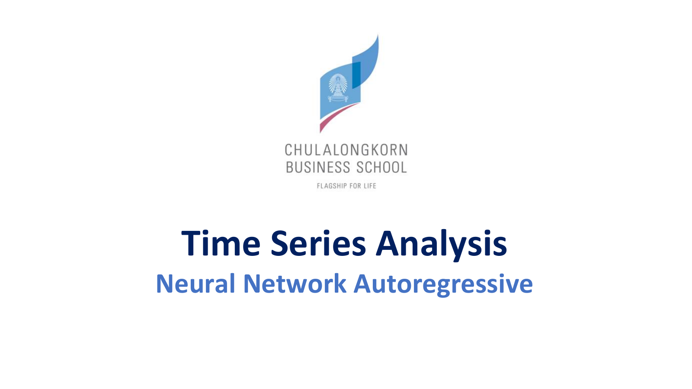
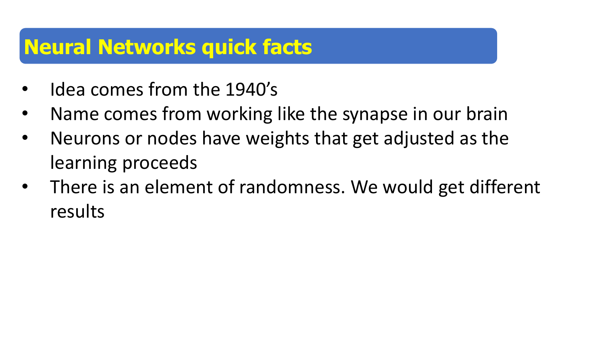
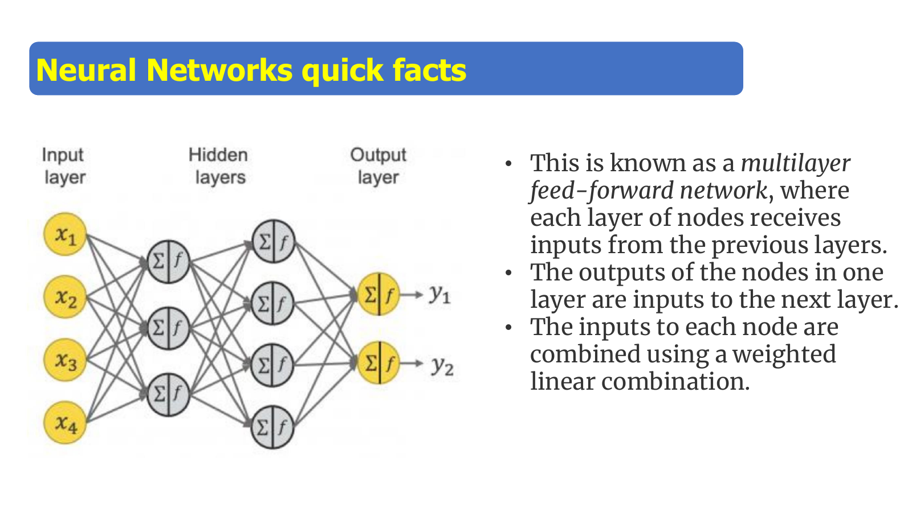
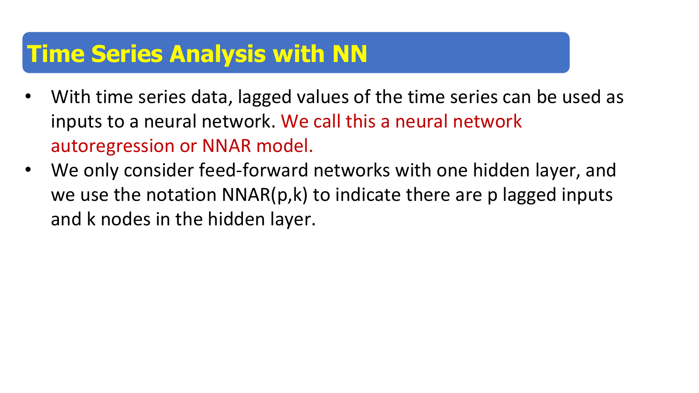
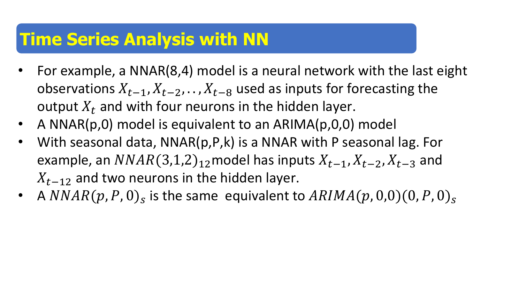
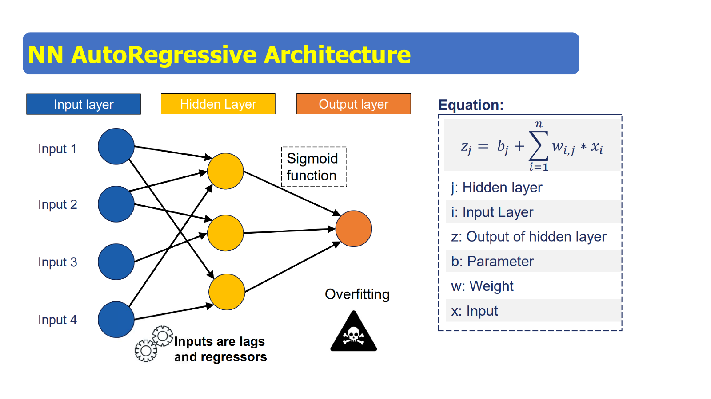
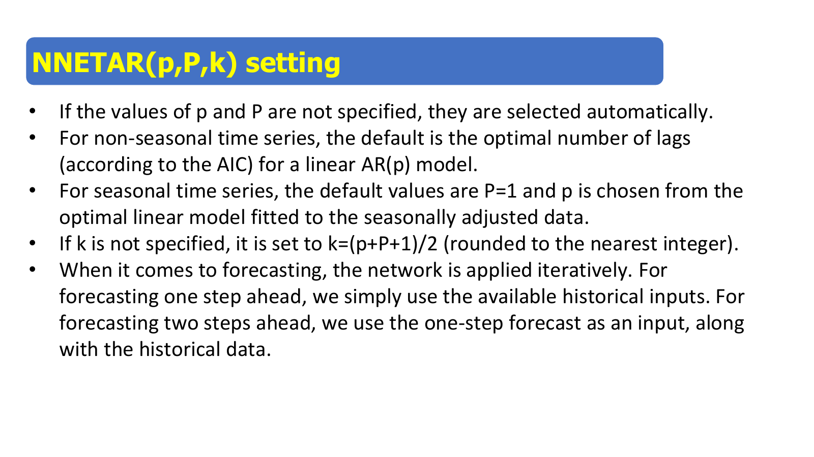
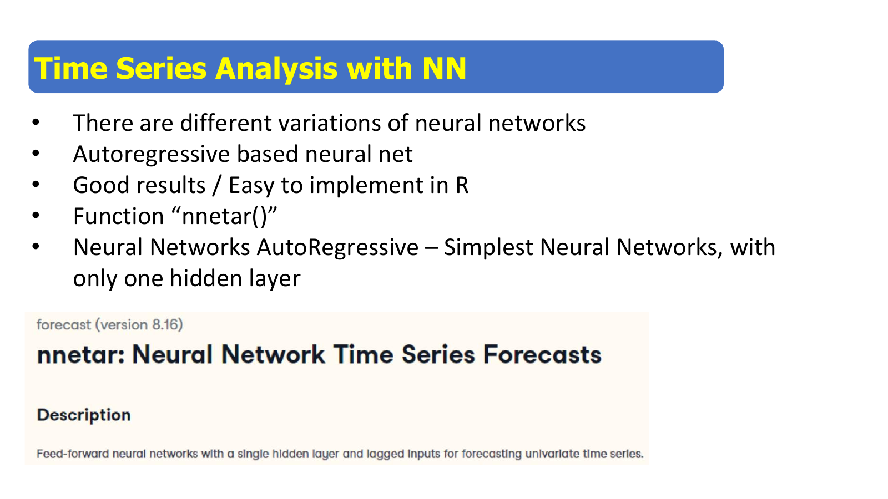
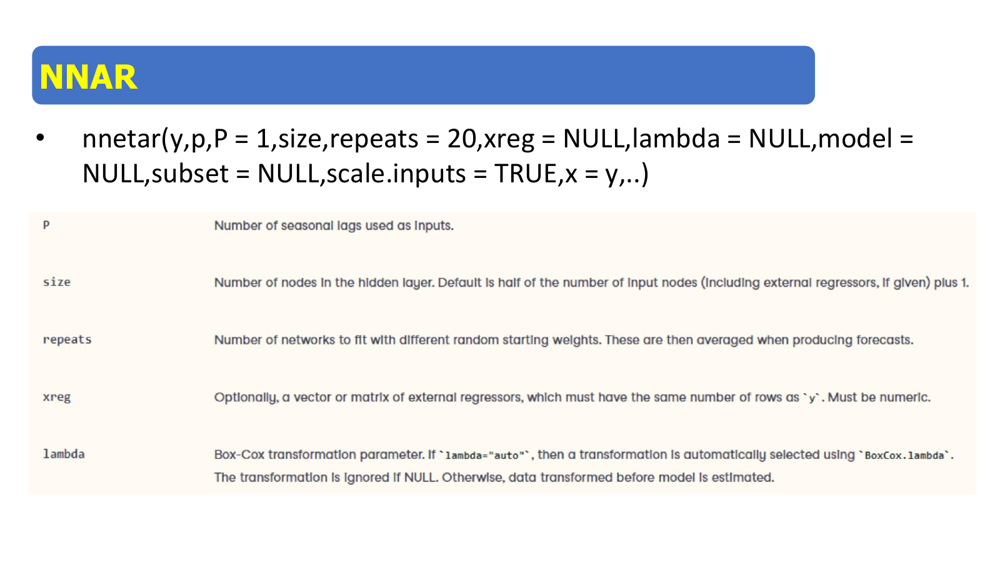
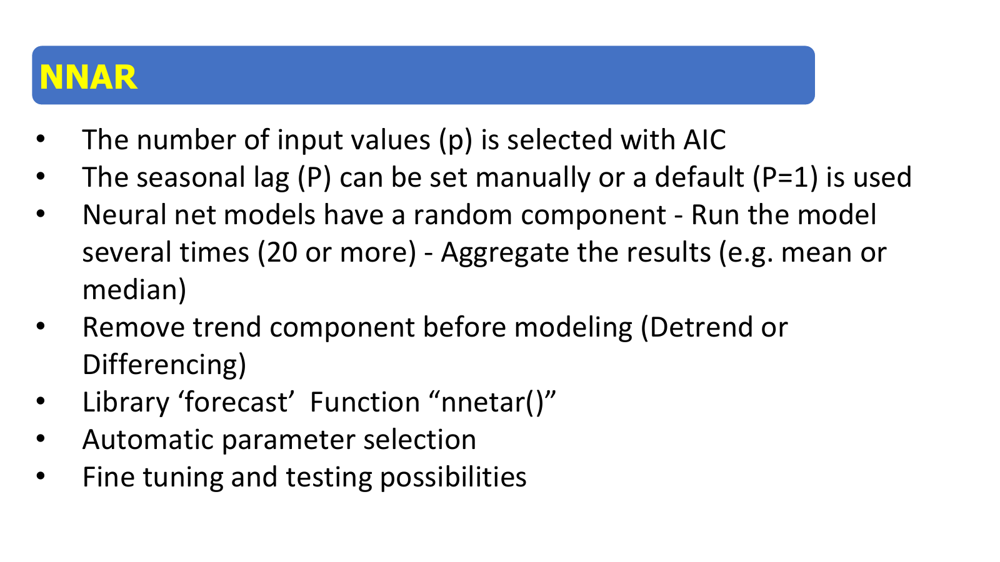
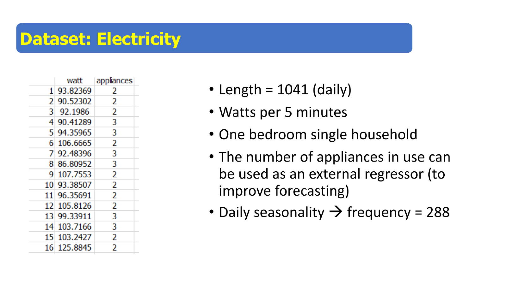
ไฟล์ R_codes.txt และ electric.txt อยู่ในโฟลเดอร์ CLASS 11 ใช้ package tswge, tseries, rugarch, FinTS และ forecast ลองฝึกต่อในแบบฝึก Lesson 12 หรือไปต่อที่ Lesson 13
ตัวเลขยกในเนื้อหาชี้มาที่รายการนี้ แต่ละรายการระบุคลาสและนาทีของคลิป พร้อมถ้อยคำในคลิปเมื่อมี
| หน้า | เนื้อหา | อยู่ในตอน |
|---|---|---|
| 1–9 | ทำไมต้อง ARCH/GARCH, Dow returns, ACF ของ return และ return² | ตอน 1 |
| 10–17 | ARCH(1), การจำลอง, ARCH(p) | ตอน 2 |
| 18–22 | GARCH(p,q), Jarque-Bera, Ljung-Box, การจำลอง | ตอน 3 |
| 23–25 | Dow rate of return ปี 2000 และ GARCH(2,1) | ตอน 4 |
| 26–37 | Neural network, NNAR, nnetar, ข้อมูลไฟฟ้า | ตอน 5 |
แหล่งอื่นที่ใช้: Class 11 ช่วง 0:00–1:30 (ตอน 1–5; ช่วง 0:24:07–0:30:46 เป็นคลิป YouTube ถอดไม่ได้), Class 12 ช่วง 1:40:31–1:41:36, ไฟล์ R_codes.txt และ electric.txt (CLASS 11), ค่าที่รันซ้ำใน R: ADF, ArchTest, ugarchfit, ugarchforecast, ACF ของ ARCH(1) จำลอง, nnetar